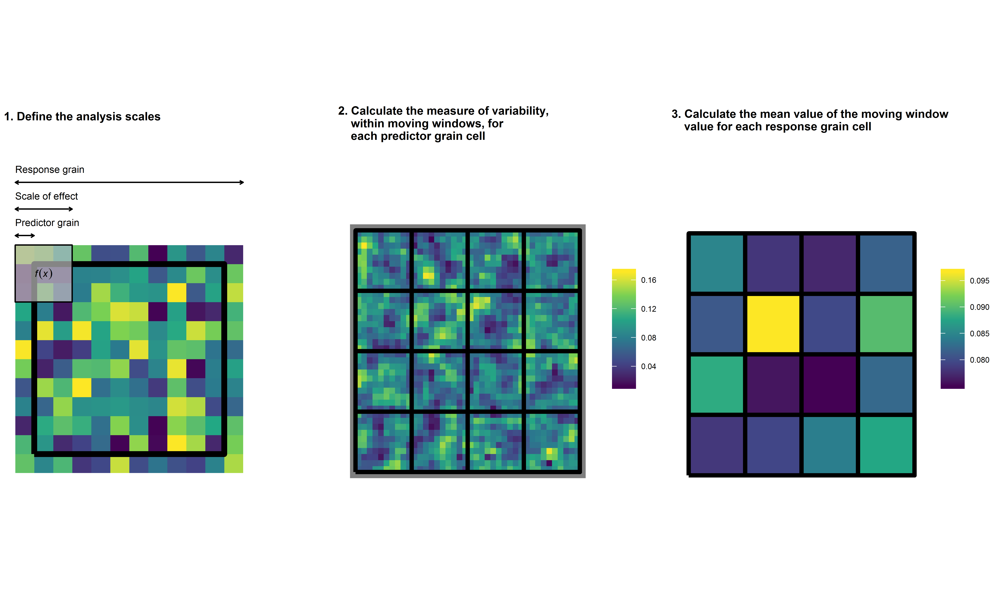

The grainchanger package provides functionality for data aggregation to a grid via moving-window or direct methods.
As landscape ecologists and macroecologists, we often need to aggregate data in order to harmonise datasets. In doing so, we often lose a lot of information about the spatial structure and environmental heterogeneity of data measured at finer resolution. An example of this is when the response data (e.g. species’ atlas data) are available at a coarser resolution to the predictor data (e.g. land-use data). We developed this method and R package in order to overcome some of these issues.
For more information on the background to and motivation for the development of this method, see Graham et al. 2019 in Methods in Ecology and Evolution.
Moving-window data aggregation
The moving-window data aggregation (MWDA) method smooths an input raster using a specified function within a moving window of a specified size and shape prior to aggregation. This acts as a convenient wrapper for the focalWeight() and focal() functions in the raster package. Additionally, we have aimed to write efficient functions for some oft-used metrics within landscape ecology for use within the moving window.
knitr::include_graphics("../man/figures/mwda_schematic.png")
The above is a graphical representation of the MWDA method. In calculating the MWDA measure, three aspects of scale are considered. Predictor grain is the characteristic spatial scale of a predictor variable, that is, the resolution of the environmental data; scale‐of‐effect determines the appropriate scale of the relationship between predictor and response, for example, an ecological neighbourhood; response grain is the grain of the unit into which you are predicting, that is, the resolution of the response variable (represented by the black lines). Note that the colour scale is unitless. Yellow cells represent ‘high’ values and dark blue cells ‘low’ values. Panel 1 shows a close up of one of the response grain cells in panel 2, whereas panel 2 shows all response grain cells for the study region. Panel 3 shows the study region after aggregation. From Graham et al. 2019.